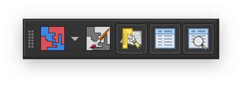

Getting Started with Redistricting¶
The QGIS Redistricting plugin allows you to create redistricting plans for legislative and other governmental bodies. You specify the number of districts and the geographic units from which plans will be built, as well as other plan parameters, such as what layer and attributes to use for population demographics, the allowable population deviation, and additional geographies to use for drawing districts. Plan parameters are stored as part of the QGIS project, while assignments of geographies to districts and district geometry and metrics are stored as vector layers in a GeoPackage file.
Plugin Toolbar¶
When you install the QGIS redistricting plugin, it will add the redistricting toolbar to the QGIS main window.
All of the QGIS redistricting plugin functions available form the plugin toolbar can also be accessed from the QGIS main menu at .
Display the plan manager. |
|
Display or hide the redistricting toolbox. The toolbox provides access to tools for painting districts by geography. |
|
Display or hide the the preview window. The preview window displays the effect on district demographics of pending unsaved changes. |
|
|
Display or hide the the district data window. The district data window displays demographic data and metrics for each district, and indicates whether districts are within the required deviation. |
Display or hide the metrics window. The metrics window displays plan metrics for the entire plan, including population deviation, compactness, and split geographies. |
|
Clicking the arrow next to the plan manager button opens the redistricting menu, which provides access to additional plugin functionality. |